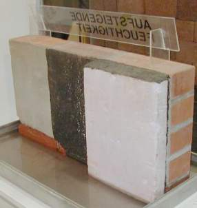
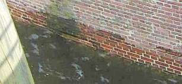
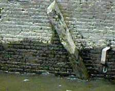
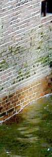
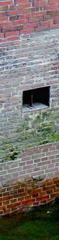

Weitere Datenübertragung Ihres Webseitenbesuchs an Google durch ein Opt-Out-Cookie stoppen - Klick!
Stop transferring your visit data to Google by a Opt-Out-Cookie - click!: Stop Google Analytics
Cookie Info. Datenschutzerklärung

 Startside for Gamle huse og restaurerings information Impressum
Startside for Gamle huse og restaurerings information Impressum
Byggerådgivning for enhver +++
Det hele på cd
Bygningsmateriale-side
Nitrate (Salpeter), Sulphate & Sodium Chloride & Other Soluble Salts In The Wall - Know How & How To Diminuish (german)
Det rene humbug: Saneringspuds WTA +++
Virksom mod fugtig mur - Rumhylster-opvarming (dansk)
Håndværkerquiz for den fiffige byggeherre
The Fraud of the Rising Damp - the Hoax with Salt, Moisture and Dampness in buildings
Kostengünstig Instandsetzen - Ratgeber zu Kauf, Finanzierung, Planung (PDF eBook, 29 S.)
Altbauten kostengünstig sanieren
- Heiße Tipps gegen Sanierpfusch im bestimmt frechsten Baubuch aller Zeiten, Druckversion + PDF eBook

Opstigende fugt og fugtspærre mod opstigende fugt på sokkel og vægge?
Information og oplysning
Kapitel 2

Her følger nogle billeder fra "udtørringen" med badekarret i den indesumpede murværk fra Denkmalmesse
2004, Leipzig:

Pas på: Ikke alle steder hvor der står "OPSTIGENDE FUGTIGHED", er der opstigende fugtighed indeni!

Ufatteligt, hvordan man med en smule fiffighed kan få overtalt den naive fredningsmyndighed til en sådan
"tørlægning".

For medkonkurrenterne lykkedes det heller ikke at få fugten til at stige.
Det kan man vente på indtil dommedag.
Hvorfor? Læs endelig videre!
Salt-fækalie-vand på Hamburgs kajmur uden "opstigende fugt" og uden horisontal isolering men med flodhøjde
og bølgeslag: +
+


+
+
Også i Bambergs "Altes Rathaus" inde
i Regnitz-floden mangler "opstigende fugt": 
Pinlig!
Alle mulige uanvendelige byggemetoder bruges i indsatsen mod "opstigende fugt". Den uvidende byggeherre har jo mere end nok penge! I Bautenschutz+Bausanierung
hæfte 7/01 skriver forfatterne Dipl.-Chem. A. Detmann, Prof. Dr. rer. nat. habil. H. Venzmer, Dipl.-Phys. C.-M. Moewe und Dipl.-Phys. O.
Bakhramov, alle fra Dahlberg-Institut Wismar "Feuchteschutz, Die technische Gretchenfrage, Sind elektroosmotische
Trockenlegungsverfahren anwendbar?" efter deres forskningsresultater på
s. 57 er de kommet frem til følgende konklusion "den elektroosmotiske metode [elektroosmose], som kun anvender minimale
spændinger og der er stor afstand mellem elektroder, opnåede ikke noget brugbart resultat".
Denne test har klargjort, at med disse metoder er det umuligt at opnå noget nævneværdigt kapillar-brydende effekt.
Ærgerligt for den som er blevet bedraget ved dette system. Også ærgerligt for de mange kunder som har betalt for alle de idiotiske metoder som har
udgravet, isoleret, påklæbet bitumen-systemer og inden har brugt saneringspuds, selvom om der kun var en
smule kondens og saltudblomstring/saltudslag/saltudslip på den kølige kældervæg. Dårligere kan man ikke begrave sine penge.
Opstigende Fugt? Kap. 3
Gamle huse og restaurerings information